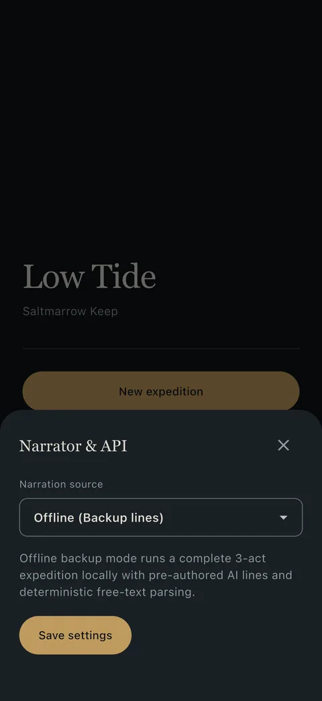
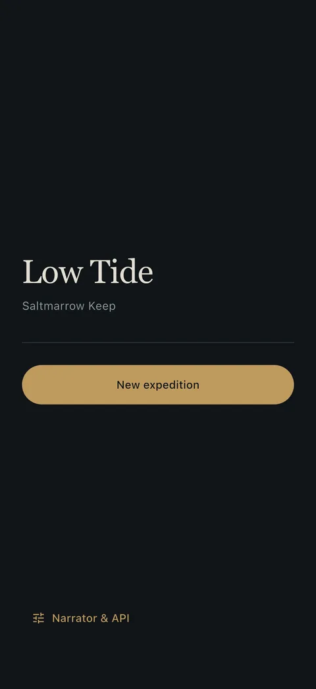

Low Tide
Feste Salzmoor
Ein Textabenteuer, in dem die Stimme, die dir die Geschichte erzählt, hilfsbereit und witzig ist – und dich anlügt.
- Bald imApp Store
- Bald beiGoogle Play
- Bald verfügbar
- iPhone & Android
- Offline spielbar
- 7 Sprachen
- Ab 12

Der Auftrag
Vierzig Züge Ebbe.
Du bist Bergerin oder Berger. Ein Händler auf dem Festland zahlt gut für die Glocke der Heiligen, die in Saltmarrow Keep hängt, einer Feste auf einer Gezeiteninsel. Du ruderst los, wenn das Meer sich zurückzieht.
Jeder Schritt kostet einen Zug. Nach etwa vierzig ist die Flut zurück, die Treppen stehen unter Wasser, und wer dann noch drinnen ist, bleibt dort.
Die Gezeitenleiste füllt sich beim Spielen.
Die Stimme
Dein Erzähler lügt.
Eine Stimme beschreibt jeden nassen Stein und gibt dir Ratschläge. Sie ist sarkastisch, seltsam freundlich, gibt dir einen Spitznamen und scheint dich zu mögen. Sie schmuggelt aber auch acht Lügen in das, was sie erzählt – und weiß mehr darüber, warum du diesen Auftrag angenommen hast, als irgendwer auf dem Festland.
„Ich würde einfach vorbeigehen. Im Hafen heißt es, dieser Gefangene hat die letzte Bergerin umgebracht.“
Das stimmt nicht.Wenn etwas nicht zusammenpasst, sag es – direkt in der Geschichte oder in deinen Feldnotizen. Entlarvst du eine Lüge, öffnen sich verborgene Wege. Zweifelst du an der falschen Stelle, schmollt die Stimme oder verstummt.

So spielt es sich
Lesen, wählen oder selbst schreiben.
- Tippe auf eine Auswahl oder schreib in eigenen Worten, was du tun willst.
- Vierzehn handgeschriebene Räume in drei Akten, von der Anlegestelle bis hinab in die Glockenkammer.
- Nimm mit, was zählt: ein Eschenruder, Ersatzschlüssel, eine Messingkerze.
- Befreie Wren, die im Torhaus angekettet ist, oder lass sie dort. Wren weiß, dass die Stimme lügt.
- Jede Runde endet mit einem Bergungsbericht: wie du herausgekommen bist, was aus der Glocke und aus Wren wurde und wie viele Lügen du entlarvt hast.

- 14Räume
- 8Lügen
- 6Enden
- 40Züge
Was drin ist
Leiser Grusel, gemacht zum Wiederspielen.
Ein Erzähler, der lügt
Acht Lügen stecken in der Geschichte. Entlarve sie, um Wege zu öffnen und die Wahrheit über die Feste zu erfahren.
Leiser Grusel
Schleichend und still: kein Blut und keine Schreckmomente. Ein paar Stellen sollen verunsichern.
Sechs Enden
Entkommen, gefangen sein oder etwas Seltsameres. Eine Runde dauert etwa eine Stunde, und jede Entscheidung verändert die nächste.
Ehrlicher Erzähler
Spiel die Geschichte durch und schalte eine Runde frei, in der die Stimme die Wahrheit sagen muss. Zähneknirschend.
Offline spielbar
Die ganze Geschichte läuft ohne Internet, ohne Konto und ohne Anmeldung. Nichts einzurichten.
Sieben Sprachen
Deutsch, Englisch, Spanisch, Französisch, Italienisch, Polnisch und Russisch.
Optional
Bring deine eigene KI mit.
Von Haus aus läuft Low Tide komplett offline, mit handgeschriebenen Szenen und Sätzen. Wenn du einen eigenen Schlüssel für Gemini, OpenAI oder Anthropic hast, kannst du ihn unter Erzähler & API eintragen – dann improvisiert die Stimme live und antwortet auf alles, was du schreibst.
- Freiwillig: Lass es aus und spiel das ganze Spiel offline.
- Dein Schlüssel bleibt auf deinem Telefon. Anfragen gehen direkt von deinem Telefon zum gewählten Anbieter.
- Wir betreiben keinen Server und sehen weder deinen Schlüssel noch das, was du schreibst.

Bildschirme
Ein Blick hinein.

Titel 
Vor der Überfahrt Torhaus 
Innenhof Feldnotizen Bergungsbericht Erzähler & API
Preis
Den ersten Akt gratis spielen.
Akt 1 ist gratis: die Anlegestelle, das Torhaus, der Innenhof und das Wärterstube.
Die ganze Feste, Akt 2 und 3 mit allen sechs Enden und dem ehrlichen Erzähler, ist als einmaliger Kauf geplant.
Kein Abo. Keine Werbung. Kein Konto.
Ab 12 Jahren wegen leiser Spannung und Gefahr. Kein Blut, keine Schimpfwörter.
Bald verfügbar.
Low Tide kommt auf iPhone und Android. Fragen? Schreib uns.
- Bald imApp Store
- Bald beiGoogle Play